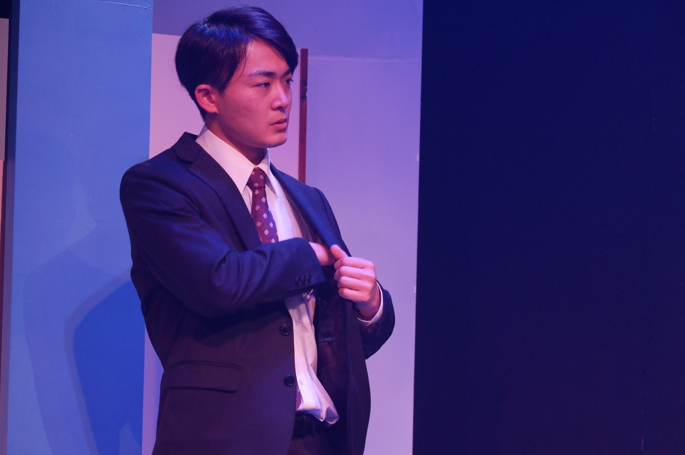

PROFILE
力徳旺(りきとく あきら)
1997/02/23生まれ
熊本県熊本市出身
趣味：自主映画・アクション動画制作、散歩、料理
特技：空手（初段）、バレー、高速手たたき
資格：普通自動車運転免許、CGクリエイター検定ベーシック
1997/02/23生まれ
熊本県熊本市出身
趣味：自主映画・アクション動画制作、散歩、料理
特技：空手（初段）、バレー、高速手たたき
資格：普通自動車運転免許、CGクリエイター検定ベーシック


TOPICS
WORKS
【短編映画】
・第5回フェローズフィルムフェスティバル特別招待作品『吉日』（2023年／監督：鳥澤空良）※主演：星野役・第2回311ジコサポ映画祭監督賞受賞作品『ヱリ子・サガ』 （2023年／監督：石塚亘） 飛島詩音役
・MOVIES-HIGH 23上映作品『灯台の下で』（2023年／監督：林正春） ※主演：浩太役
・日本大学芸術学部放送学科卒業制作『ノイズ』（2024年／監督：米一碧海）新田役
・Yellow Film Labo制作作品『ほどけただけ』（2024年／監督：千脇大輔） ユウスケ役
・in-facto制作作品『5movies』（2024年） YouTuber役
・Yellow Film Labo制作作品『Intersection』（2025年／監督：千脇大輔） ※主演：佐藤清役


【舞台】
・アンティークス vintage29『未来からの手紙』（2021年）坂上海斗役・三宅役／作・演出：岡崎貴宏・Jr.5 第12回公演『硝子はオバサン』（2021年）河内幸太役／作・演出：小野健太郎
・アンティークス vintage30『この世が終わる前に』（2022年）ショウ役／作・演出：岡崎貴宏
・ACT 企画vol.6『サンタクロース、船を漕ぐ』（2023年）田崎旺太郎役／作：金丸知美・演出：西本健太郎
・劇団身体ゲンゴロウ第7回公演『最初の二十面相』（2024年）沼倉庄吉役／作・演出：菅井啓太
・セミコロン『ココロゲソウ（心化粧）』（2024年）オムニバス作品で全7作品の3作品出演（主演含む）／作・演出：藤井仁人
・TOKYO笹塚ボーイズ『ランプとブレーキ』（2025年）※主演：長居久志／作・演出：川上一樹
・avenir'e 8th create『音のない川』（2025年）男1役（4人芝居のメインキャストとして）／作・メインディレクター：池内風
- 


【MV】
2022 松尾竜平『英雄』山岳タケシ監督 主演：青年役【配信】
2024 Netflix 内さまワールド #25アドリブコント企画仕掛け人役として出演（即興演技によるシチュエーション芝居）